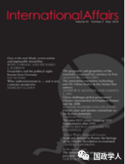
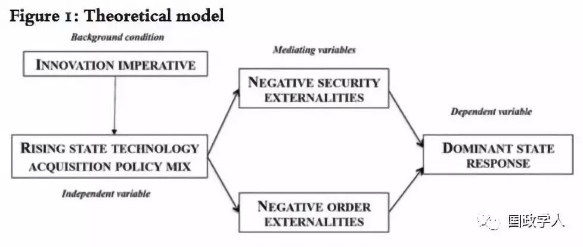
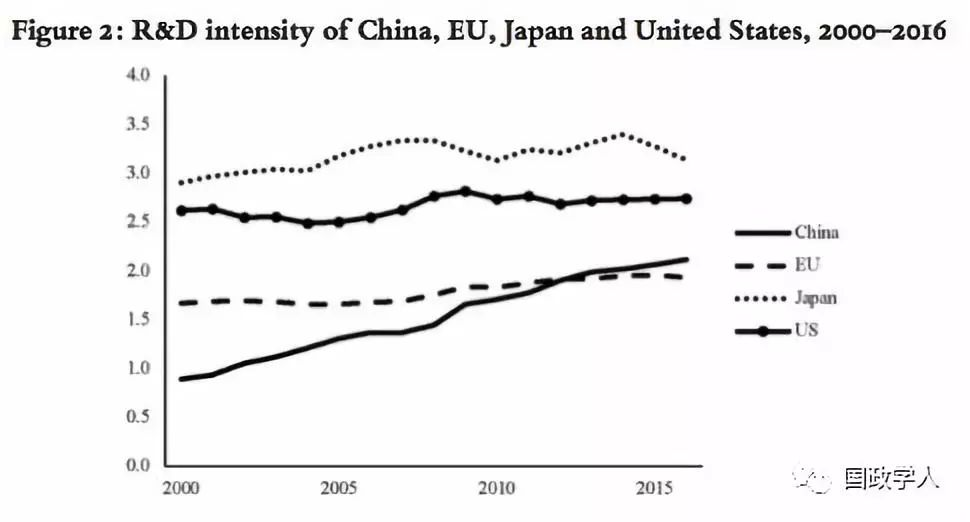

收录于合集

简 介
【 作者 】
Andrew B. Kennedy ，澳大利亚国立大学亚太研究院克劳福德公共政策系副教授，主要研究方向是比较外交政策，特别关注美国、中国和印度在科技全球化领域的竞争与合作。同时，他在关于冷战和冷战后中国和印度的外交政策研究方面著述颇丰。
Darren J. LIM ，澳大利亚国立大学艺术和社会科学学院的高级讲师。他专长于国际政治经济学和国际安全的交叉研究，主要研究兴趣集中在地缘经济学、权力转移理论、国际秩序背景下的宏观战略，以及印度洋－太平洋区域研究。
【 编译 】
蔡 宇
【 来源 】
Andrew B. Kennedy and Darren J. LIM, The Innovation Imperative: Technology and US-China Rivalry in the Twenty-First Century, International Affairs 94(3), pp.553-572, 2018。
【 刊物 】
****International Affairs 是由英国皇家国际事务研究设立的国际关系学类顶尖学术期刊，每年出版六期，具有严谨的学术性与较高的政策参考价值。期刊具有2.952的影响因子，在全球国际关系类学术期刊中排名前10。

【 校对 】
金 琳 陈舜波
【 审核 】
李代霓
核心观点
文章旨在构建权力转移过程中，科技创新如何产生竞争的理论框架。首先，作者认为崛起国为克服中等收入陷阱，往往面临创新压力，需要通过自主创新、国际交易、无偿获取三种方式获取创新科技。这将挑战守成国的战略利益，使守成国陷于消极的外部安全环境和国际秩序环境之中。其次，作者以中国与美国在科技领域的竞争作为案例，认为中国的高科技投资可能威胁美国的外部安全环境，而中国对国际知识产权体系的挑战可能危及美国主导的国际秩序环境。最后，作者指出由于结构性矛盾的存在，美国对中国的制裁可能是常态。
文章导读
作者认为，虽然广大国际关系学者都认可科技在国际政治中十分重要，但仍然缺乏阐释崛起国与守成国如何在科技竞争的过程中互动的理论框架。文章旨在回答：驱动崛起国在创新领域决策的因素是什么？基于战略利益的考量，守成国在何种情况下将对崛起国的挑战作出回应？
作者认为：崛起国为了克服中等收入陷阱，提升国际地位，面临着一种“创新压力”，即崛起国获取和研发新技术的需求。崛起国寻求科技创新的不同方式，塑造了崛起国与守成国的互动行为。其中，崛起国的创新行为可能为守成国带来两种消极影响：第一，崛起国的行为将为守成国带来消极的外部安全环境；第二，崛起国将挑战守成国主导的国际秩序，为守成国带来消极的国际秩序环境。
第一部分：创新势在必行
以经济学观点解释权力转移理论，作者认为发达国家往往具有强大的科技创新能力，而崛起国家不得不制定各种策略追求创新，以维持发展势头，追赶发达国家。
崛起国获取新兴技术创新的途径有三种：一是崛起国鼓励国内生产者自主研发新兴科技，如直接补贴，税收优惠，保护性政策等，其优点在于技术依赖程度低，并能保持长期收益，缺点在于研发成本较高；二是崛起国与守成国进行设计技术转让的商业交易，这是当前运用最广的技术创新模式；三是崛起国通过获取网络公开资源或网络黑客的方式，无偿获取知识产权。
** 第二部分：创新领域的权力转移理论模型**
作者认为，创新领域的权力转移理论在两方面有所体现：首先，当守成国对崛起国存在军事冲突的疑虑，且崛起国获取的科技可能提升其相对军事作战实力时，崛起国的科技创新将为守成国带来消极的外部安全环境。例如，崛起国可能将民用科技转化为军用科技，从而引发大国的紧张情绪。此时，守成国倾向于禁止相关交易，切断相关科技的供给。
其次，当崛起国的科技创新行为冲击或改变了守成国推行的知识产权秩序，且崛起国与守成国的利益冲突降低了现存秩序的合法性时，守成国将会面临消极的国际秩序环境。例如，巴西、中国和印度曾拒绝推行有利于美国的《贸易知识产权协定》的部分条款，体现了发展中国家与美国主导的国际知识产权秩序的冲突。此时，守成国倾向于强硬地维护既有规则和制度，联合其他发达国家对崛起国施压，从而威胁或惩罚崛起国挑战秩序的行为。

图表1概括了上述理论模型。在创新必要性的背景下，崛起国家以“研发”“交易”或“无偿取得”相结合的政策手段获取科技，是模型的自变量。崛起国的特定政策进而塑造了守成国的消极外部战略环境（分为消极的外部安全环境与消极的国际秩序环境），是模型的中间变量。最终，守成国面对外部环境的变化，进行不同的政策回应，是模型中的因变量。
** ** 第三部分: 经验分析：中国对科技和创新的研发****
回应上文的理论框架，作者以中国的科技创新政策对中美关系的影响作为案例，探究两个问题：中国作为崛起国家，如何对创新压力作出回应？中国的行为如何损害了美国的国家利益和国际秩序？美国又如何对此做出回应？
第一，中国作为发展中国家，推行自主创新的科技政策，积极回应了创新压力。近半个世纪以来，中国政府高度重视科技在产业转型升级中的地位，提出了产业融合升级战略、“互联网＋”计划、“中国制造2025”计划等。中国越来越成为全球科技创新的重要推动者。特别是，中国广泛投资了信息通信技术，人工智能，新能源等多个领域。截止至2015年，中国的国家科技研发投入成本占国民经济的比重已经超过欧盟，仅次于美国和日本，如图表2所示。

第二，中国的创新战略对美国战略利益产生了影响。作者认为，21世纪，中国大力发展科技的国家战略，既催生了中美合作的可能，也带来了中美竞争的新矛盾。一方面，中国是美国高科技元件的重要出口方，也是美国最大的科技研发伙伴，两国存在广泛的合作前景。另一方面，中国与美国的科技双边合作也挑战了美国的战略利益。这种利益冲突体现在外部安全环境与国际秩序环境两个方面。
在外部安全环境上，由于中美在朝鲜半岛，台湾海峡，东海与南海存在军事冲突的隐患，且由于美方对半导体技术等核心技术存在国防安全的考量，许多中国在美投资受到美国政府的干预。
在国际秩序环境上，作者称中国的网络盗版行为侵害了美国主张的《贸易知识产权协定》所保护的国际知识产权秩序，与美国的网络安全战略相冲突，导致美国政府频繁对中国政府的网络行为施压。
** ** 结论****
综上所述，科技不仅带来中美关系的合作，同时将带来中美围绕科技的竞争。在权力转移理论的视角下，作者以崛起国的“创新压力”作为自变量，指出崛起国的科技创新行为将塑造守成国消极的外部安全环境和国际秩序环境，导致守成国干预来自崛起国的跨国科技投资，强化有利于本国的国际知识产权规则体系。作者预测，随着中国科技投入的不断增长，中美围绕高科技领域跨国投资的竞争，与国际知识产权保护体系的摩擦可能成为常态。
扫描下方小程序码查看原文p df
本文由国政学人微信公众平台编译首发
更多阅读
国政学人 （ID：guozhengxueren)
为方便学人及时阅读高质量文章
别忘把国政学人设置 星标 哦~

国政学人
支持学术公益与知识传播
微信扫一扫赞赏作者 __赞赏
已喜欢，对作者说句悄悄话
取消 __
发送给作者
发送
最多40字，当前共字
上一页 1/3 下一页
长按二维码向我转账
支持学术公益与知识传播
受苹果公司新规定影响，微信 iOS 版的赞赏功能被关闭，可通过二维码转账支持公众号。